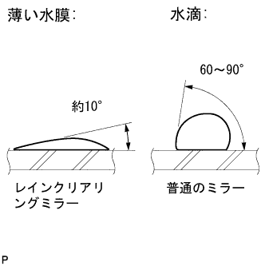
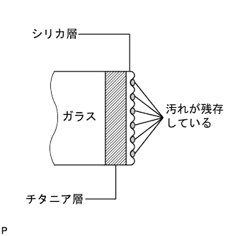

Rain Clearing Mirror Adjustment |
| 1. Inspect and Adjust Rain Clearing Mirror |
 |
Inspection
Check that when water is sprayed on the mirror surface, it does not form droplets (beads) but forms a thin water film (hydrophilic state).
Cleaning
Wash the mirror surface with water to remove mud and dirt.
After cleaning the mirror surface with a soft cloth using car shampoo, glass cleaner or equivalent, rinse off the cleaner with plenty of running water.
Ultraviolet Irradiation
 |
Leave the vehicle outdoors for 3 to 5 hours to expose the mirror surface to ultraviolet light (sunlight).